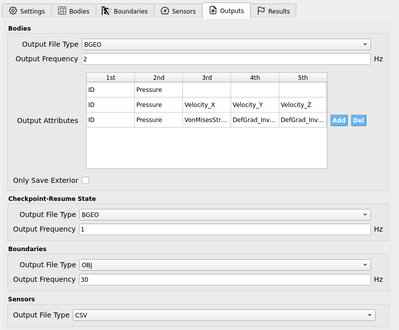

Outputs
The Outputs tab collects simulation results that are not controlled by individual Sensors. Here you choose file formats, sampling rates, and (legacy) checkpoint/resume behavior.
{kind=link}

Bodies
Controls per-frame output for material bodies defined in Bodies.
Setting |
What it does |
Notes |
|---|---|---|
Output File Type |
Select the geometry cache format for body snapshots. |
BGEO or GEO (viewable in SideFX Houdini; Apprentice edition is free). |
Output Frequency (Hz) |
How often body frames are written. |
|
Only Save Exterior |
If checked, writes only particles near the body surface. |
Reduces disk/I/O at the cost of losing interior data. |
Warning
Only Save Exterior removes interior state permanently from the saved frames. Leave unchecked unless you are certain you only need surface data.
Output Attributes (per body)
This table appears inside the Bodies widget:
Each row corresponds to a body from Bodies in exact order.
Each cell holds an attribute name to record per particle on that body (e.g.,
Pressure,Velocity_X,ID, …).
Tip
Keep the table synchronized with your body list. If you reorder or add/remove bodies, revisit Output Attributes to ensure rows still match the intended body.
Checkpoint-Resume State
Deprecated (pending fixes). Allows periodic snapshots for restart.
Setting |
What it does |
Notes |
|---|---|---|
Output File Type |
Format for checkpoint files. |
BGEO or GEO |
Output Frequency (Hz) |
How often checkpoints are written. |
Use a low rate to limit disk churn. |
Warning
This feature is currently deprecated. Parameters are exposed for forward compatibility, but checkpointing may be disabled or unstable in this version.
Boundaries
Controls export of boundary geometry defined in Boundaries.
Setting |
What it does |
Notes |
|---|---|---|
Output File Type |
File format for boundary exports. |
OBJ (currently the only option) |
Output Frequency (Hz) |
Sampling rate for boundary output. |
Match to how often you need boundary motion snapshots. |
Sensors
Controls the file format for sensor time series defined in Sensors.
Setting |
What it does |
Notes |
|---|---|---|
Output File Type |
Choose the tabular format for sensor outputs. |
CSV or TXT |
Note
The sampling rate of sensor outputs is set in the Sensors tab per sensor group (e.g., wave-gauges, load-cells). The file type here only selects the on-disk format.
Energies
Exports global energy diagnostics.
Setting |
What it does |
Notes |
|---|---|---|
Output File Type |
Select the tabular format. |
CSV or TXT |
Output Frequency (Hz) |
How often energy samples are written. |
Choose based on how quickly energies vary. |
Output Kinetic? |
Toggle export of kinetic energy. |
On/Off |
Output Gravity? |
Toggle export of gravitational potential energy. |
Datum is Y = 0 (vertical zero level). |
Output Strain? |
Toggle export of elastic strain energy. |
On/Off |
Best-Practice Guidance
Start with Bodies Output = 1-5 Hz for interactive review; increase only if motion details are being aliased, at which point 24-60 Hz may be appropriate for typical animations.
Prefer BGEO when using Houdini-based post-processing pipelines.
Keep sensor sampling aligned with the instrument rates you’re replicating; don’t oversample unless you truly need the bandwidth.
Use Only Save Exterior for very large free-surface runs where interior data is unnecessary, and monitor disk usage.
For Boundaries, match output frequency to the fastest motion of interest (e.g., wave-maker strokes) to avoid temporal aliasing.